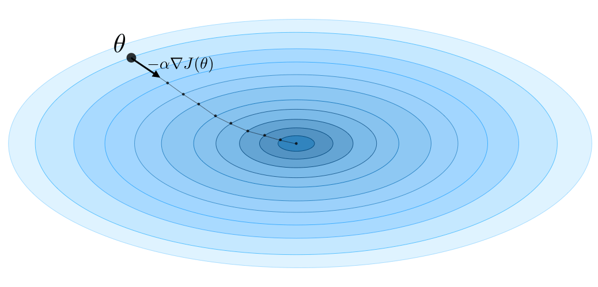

原理篇¶
梯度下降法的数学原理¶
梯度下降法（Gradient descent）是一个一阶最优化算法，通常也称为最速下降法。
要使用梯度下降法找到一个函数的局部极小值，必须向函数上当前点对应梯度（或者是近似梯度）的反方向的规定步长距离点进行迭代搜索。如果相反地向梯度正方向迭代进行搜索，则会接近函数的局部极大值点；这个过程则被称为梯度上升法。
梯度下降方法基于以下的观察：如果实值函数\(F(x)\)在点\(a\)处可微且有定义，那么函数\(F(x)\)在点\(a\)沿着梯度相反的\(- \nabla F(a)\)下降最快。 因此，如果
对于\(\lambda>0\)且\(\lambda\)是一个足够小的数值时成立，那么\(F(a)\ge F(b)\)。
考虑到这一点，我们可以从函数\(F\)的初始\(x_0\)出发，并考虑如下序列\(x_0,x_1,x_2…\),使得
因此可得到
如果顺利的话\((x_n)\)就能收敛到期望的极值。其中每次迭代中\(\lambda_n\)的值可以改变。

上图示例了这一过程，这里假设\(F\)定义在平面上，并且函数图像是一个碗形。蓝色的曲线是等高线（水平集），即函数\(F\)为常数的集合构成的曲线。箭头指向该点梯度的反方向。（注：一点处的梯度方向与通过该点的等高线垂直）。沿着梯度下降方向，将最终到达碗底，即函数F值最小的点。
证明¶
证明：如果实值函数\(F(x)\)在点\(a\)处可微且有定义，那么函数\(F(x)\)在点\(a\)沿着梯度相反的\(- \nabla F(a)\)下降最快。
提到梯度，就必须从导数、偏导数和方向导数讲起，弄清楚这些概念，才能够正确理解为什么在优化问题中能够使用梯度下降法来优化目标函数。
在这里先简要介绍一下导数和偏导数。
在微积分中，导数反映的是函数\(y = f(x)\)在某一点处沿\(x\)轴正方向的变化率。而偏导数与导数在本质上是一致的，都是当自变量的变化量趋于0时，函数值的变化量与自变量变化量比值的极限。直观地说，偏导数也就是函数在某一点上沿坐标轴正方向的的变化率。
二者区别主要在于：
导数，指的是一元函数中，函数\(y = f(x)\)在某一点处沿\(x\)轴正方向的变化率；
偏导数，指的是多元函数中，函数\(y=f(x_{1},x_{2},...,x_{n})\)在某一点处沿某一坐标轴\((x_{1},x_{2},...,x_{n})\)正方向的变化率。
简要介绍一下导数和偏导数之后，我们主要介绍一下方向导数和梯度，包含完整的推导公式。
现在我们先来讨论函数\(z=f(x,y)\)在一点\(P\)沿某一方向的变化率问题。
为了解决这个问题，我们得引入如下定义：
设函数\(z=f(x,y)\)在点\(P(x,y)\)在某一领域 \(U(p)\)内有定义,从点\(P\)引一条射线\(l\)l ,设\(x\)轴正向到射线\(l\)的转角为\(\varphi\)，并设\(P'(x+\Delta x,y+\Delta y)\)为\(l\)上的另一点且\(P'\in U(p)\) 。我们考虑函数的增量\(f(x+\Delta x,y+\Delta y)-f(x,y)\)与\()P,P'\)两点间距\(\rho =\sqrt{(\Delta x)^{2}+(\Delta y)^{2}}\)的比值，当\(P'\)沿着\(l\)趋于\(P\)时，如果这个比的极限存在，则称这极限为函数\(f(x,y)\)在点\(P\)沿方向\(l\)的方向导数，记做\(\frac{\partial f}{\partial l}\)，即：
从定义可知，当函数\(f(x,y)\)在点\(P(x,y)\)的偏导数\(f_x,f_y\)存在时，函数在点\(P\)沿着\(x\)轴正向\(e_1=(1,0)\)，y轴正向\(e_2=(0,1)\)的方向导数存在且其值依次为\(f_x,f_y\)，函数在点沿\(x\)轴负向\(e_1^′=(-1,0)\)，\(y\)轴负向\(e_2^′=(0,-1)\)的方向导数也存在且其值依次为\(-f_x,-f_y\)。
关于方向导数\(\frac{ \partial f}{\partial l}\)的存在及计算，我们有如下定理：
如果\(z=f(x,y)\)在点\(P(x,y)\)是可微的，那么函数在该点沿任一反向的方向导数都存在，且有
其中\(\varphi\)为\(x\)轴到方向\(l\)的转角。
证：根据函数\(z=f(x,y)\)在点\(P(x,y)\)可微分的假定，函数的增量可以表达为：
两边各除以\(\rho\)，得到
根据
我们就可以证明方向导数存在且其值为
对于三元函数\(u=f(x,y,z)\)来说，它在空间一点\(P(x,y,z)\)沿着方向\(l\)(设方向的方向角为 \((\alpha,\beta,\gamma)\)的方向导数，同样可以定义为
其中\(\rho =\sqrt{(\Delta x)^{2}+(\Delta y)^{2}+(\Delta z)^2},\ \Delta x=\rho \, cos\alpha,\Delta y=\rho \, cos\beta,\Delta z=\rho \, cos\gamma\)。
同样可以证明，如果函数在所考虑的点处可微分，那么函数在该点沿着\(l\)方向的方向导数为:
同样可以扩展到\(n\)元函数\(u=f(x_1,x_2,...,x_n)\)中，这里就不一一陈诉了。
与方向导数有关联的一个概念是函数的梯度。其定义为：
设函数\(z=f(x,y)\)在平面区域\(D\)内具有一阶连续偏导数，则对于每一点\((x,y)\in D\)，都可定义出一个向量\(\frac{\partial f}{\partial {x}}i+\frac{\partial f}{\partial {y}}j\)，这向量称为函数\(z=f(x,y)\)在点\(P(x,y)\)的梯度，记作\(grad\ f(x,y)\) ,即
如果设\(e=cos \varphi \,i+sin \varphi \,j\)是与方向\(l\)同方向的单位向量，则由方向导数的计算公式可知:
其中\((grad\ f(x,y),e)\)表示向量\(grad\ f(x,y)\)与\(e\)的夹角。
由此可以看出，方向导数就是梯度在射线上的投影，当方向\(l\)与梯度的方向一致时，有
从而有\(\frac{\partial f}{\partial {l}}\)最大值。沿梯度方向的方向导数达到最大值，也就是说梯度的方向是函数\(f(x,y)\)在这点增长最快的方向。因此，我们可以得到如下结论：函数在某点的梯度是这样一个向量，它的方向与取得最大方向导数的方向一致，而它的模为方向导数的最大值。
接着我们来证明：一点处的梯度方向与通过该点的等高线垂直。
由梯度的定义可知，梯度的模为
当\(\frac{\partial f}{\partial x}\)不为零时，那么\(x\)轴到梯度的转角的正切值为
我们知道，一般说来二元函数\(z=f(x,y)\)在几何上表示一个曲面，这曲面被平面\(z=c\) (\(z\)是常数)所截得的曲线的方程为
这条直线\(l\)在\(xOy\)面上的投影是一条平面曲线\(l^∗\),它在\(xOy\)平面直角坐标系中的方程为 ：
对于曲线\(l^∗\)上的一切点，已给函数的函数值都是\(c\)，所以我们称平面曲线\(l^∗\)为函数\(z=f(x,y)\)的等高线。
由于等高线\(f(x,y)=c\)上任一点\((x,y)\)处的发现的斜率为：
所以梯度\(\frac{\partial f}{\partial x}*i+\frac{\partial f}{\partial y}*j\)为等高线上点\(P\)处的法向量，因此我们可得到梯度与等高线的下述关系：函数\(z=f(x,y)\)在点\(P(x,y)\)的梯度的方向与过点\(P\)的等高线\(f(x,y)=c\)在这点的法线的一个方向相同，且从数值较低的等高线指向数值较高的等高线，而且梯度的模等于函数在这个法线方向的方向导数，这个法线方向就是方向导数取得最大值的方向。